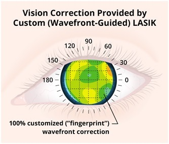

If you have a refractive error, such as nearsightedness (myopia), farsightedness
(hyperopia), astigmatism or presbyopia, refractive surgery is a method for correcting or improving
your vision. There are various surgical procedures for correcting or adjusting your eye's focusing
ability by reshaping the cornea, or clear, round dome at the front of your eye. Other procedures
involve implanting a lens inside your eye. The most widely performed type of refractive surgery is
LASIK (laser-assisted in situ keratomileusis), where a laser is used to reshape the
cornea.
Refractive surgery might be a good option for you if you:
There is no universally-accepted, best method for correcting refractive errors. The best option for you should be decided after a thorough examination and discussion with your ophthalmologist.
LASIK (laser-assisted in situ keratomileusis) is an outpatient refractive surgery procedure used to treat nearsightedness, farsightedness and astigmatism. A laser is used to reshape the cornea — the clear, round dome at the front of the eye — to improve the way the eye focuses light rays onto the retina at the back of the eye.
With LASIK, an ophthalmologist creates a thin flap in the cornea using either a blade or a laser. The surgeon folds back the flap and precisely removes a very specific amount of corneal tissue under the flap using an excimer laser. The flap is then laid back into its original position where it heals in place.
For people who are nearsighted, LASIK is used to flatten a cornea that is too steep. Farsighted people will have LASIK to achieve a steeper cornea. LASIK can also correct astigmatism by shaping an irregular cornea into a more normal shape.
It is important that anyone considering LASIK have realistic expectations. LASIK allows people to perform most of their everyday tasks without corrective lenses. However, people looking for perfect vision without glasses or contacts run the risk of being disappointed. More than 90 percent of people who have LASIK achieve somewhere between 20/20 and 20/40 vision without glasses or contact lenses. If sharp, detailed 20/20 vision is essential for your job or leisure activities, consider whether 20/40 vision would be good enough for you.
You should be comfortable with the possibility that you may need a second surgery (called a retreatment or enhancement) or that you might need to wear glasses for certain activities, such as reading or driving at night. Also, you should be aware that LASIK cannot correct presbyopia, the age-related loss of close-up focusing power.
LASIK is performed while the patient reclines under a surgical device called an
excimer laser in an outpatient surgical suite.
First, the eye is numbed with a few drops of topical anesthetic. An eyelid holder is placed between
the eyelids to keep them open and prevent the patient from blinking. A suction ring placed on the
eye lifts and flattens the cornea and helps keep the eye from moving. The patient may feel pressure
from the eyelid holder and suction ring, similar to a finger pressed firmly on the eyelid.
From the time the suction ring is put on the eye until it is removed, vision appears dim or goes
black. Once the cornea is flattened, a hinged flap of corneal tissue is created using an automated
microsurgical device, either a laser or blade. This corneal flap is lifted and folded back. Then the
excimer laser preprogrammed with the patient's unique eye measurements is centered above the
eye.
The surgeon checks that the laser is positioned correctly. The patient looks at a special pinpoint
light, called a fixation or target light, while the excimer laser sculpts the corneal tissue. Then
the surgeon places the flap back into position and smoothes the edges. The corneal flap sticks to
the underlying corneal tissue within two to five minutes, and stitches are not needed.
The patient should plan to have someone drive him or her home after the procedure and then take a
nap or just relax. To help protect the cornea as it heals, the surgeon may place a transparent
shield over the eye(s) to protect against accidental bumps and to remind the patient not to rub the
eye(s). The patient may need to wear the shield only when sleeping. The surgeon will provide
eyedrops to help the eye heal and relieve dryness.
It may take three to six months after LASIK surgery for the improvements in a person's vision to
fully stabilize and any side effects to go away.
LASIK, like any surgery, has potential risks and complications that should be carefully considered.
Since it was approved by the FDA in 1998, LASIK is has become a popular treatment in the United
States and the overall complication rate is low. Infection and inflammation are possibilities, as
with any surgical procedure, and usually can be cleared up with medications.
Problems with the corneal flap after surgery sometimes make further treatment necessary. There is a
chance, though small, that vision will not be as good after the surgery as before, even with glasses
or contacts.
Some people experience side effects after LASIK that usually disappear over time. These side effects
may include hazy or blurry vision; difficulty with night vision and/or driving at night;
scratchiness, dryness and other symptoms of the condition called "dry eye"; glare, halos or
starbursts around lights; light sensitivity; discomfort or pain; or small pink or red patches on the
white of the eye. In a small minority of patients, some of these effects may be permanent.
Sometimes a second surgery, called a retreatment or enhancement, may be needed to achieve the
desired vision correction. This is more likely for people who were more nearsighted, farsighted, or
had higher astigmatism before LASIK — those whose vision originally needed more intensive
correction. Approximately 10.5 percent of LASIK patients in the United States require a
retreatment.
If you want the sharpest vision possible after laser vision correction, a procedure you definitely
should consider is custom wavefront LASIK.
Custom wavefront LASIK — also called "custom LASIK" or "wavefront LASIK" — adds a greater degree of
precision and personalization to LASIK vision correction surgery by using advanced wavefront
technology to evaluate the unique characteristics of your eyes.
Conventional LASIK surgery attempts to recreate the vision correction that your eyeglass
prescription provides. But eyeglass prescriptions are not unique — thousands, even millions, of
people can have the same eyeglass prescription. And because of unique characteristics of each
person's eyes that cannot be measured with the conventional technology used to determine refractive
error during an eye exam, people who have the same eyeglasses prescription will see the world with
different degrees of clarity with those same prescription lenses.
Custom LASIK uses much more detailed information than a conventional eyeglasses prescription to
program the excimer laser that reshapes your eye during the vision correction procedure. The
wavefront technology used for custom LASIK makes the procedure superior to a conventional LASIK
procedure in two ways:
